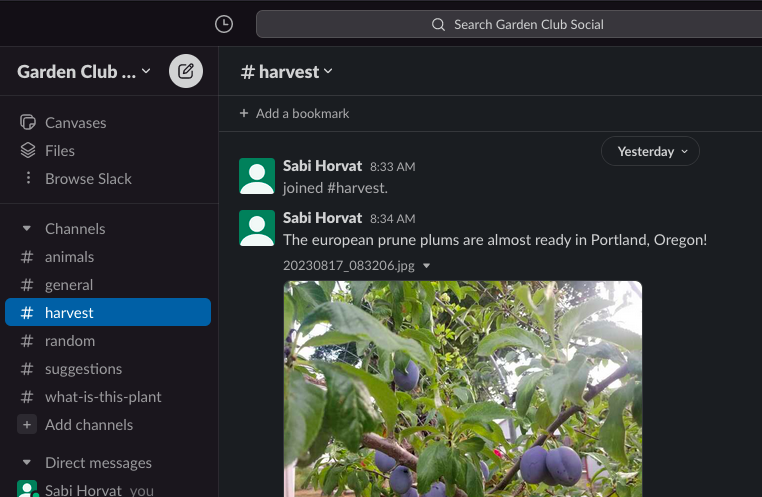

PDX Gardens
Welcome to PDX Gardens!
PDX Gardens is new and starting from the ground up.
This informational page was launched on August 16, 2023.
Please submit any suggestions in the *Suggestions* Slack channel
How to join and use PDX Gardens
1. Download the Slack app for your phone,
or skip that step if you prefer to use a computer browser.
2. Here is the invitation link to join:
https://join.slack.com/t/duck-jyb4569/shared_invite/zt-21h2k94du-PNCwVTxUc31GmBcCG6LJdw/.
Or you may add "pdxgardens" (pdxgardens.slack.com) to your Slack app
3. Then, whenever you'd like to feel good,
open the app or use the following link to chat:
https://pdxgardens.slack.com/.
About PDX Gardens
The purpose of PDX Gardens is to:
1. connect gardeners, orchardists, et cetera
2. via a social media that does not contain all sorts of other noise
3. the slack group is called PDX, since that's where I'm starting to
spread the word, but everyone is welcome.
Follow the Slack channels that are relevant and of interest to you!
Again, this was launched on August 16, 2023.
Your participation will help the forum grow!
